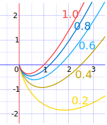
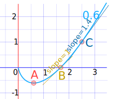
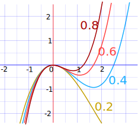
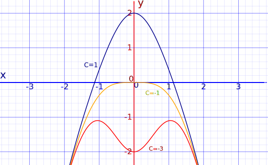

First Order Linear Differential Equations
You might like to read about Differential Equations
and Separation of Variables first!
A Differential Equation is an equation with a function and one or more of its derivatives:

Example: an equation with the function y and its
derivative
dy
dx
Here we will look at solving a special class of Differential Equations called First Order Linear Differential Equations
First Order
They are "First Order" when there is only dy dx , not d2y dx2 or d3y dx3 etc
Linear
A first order differential equation is linear when it can be made to look like this:
dy dx + P(x)y = Q(x)
Where P(x) and Q(x) are functions of x.
To solve it there is a special method:
- We invent two new functions of x, call them u and v, and say that y=uv.
- We then solve to find u, and then find v, and tidy up and we are done!
And we also use the derivative of y=uv (see Derivative Rules (Product Rule) ):
dy dx = u dv dx + v du dx
Steps
Here is a step-by-step method for solving them:
- 1. Substitute y = uv, and
dy dx = u dv dx + v du dx
intody dx + P(x)y = Q(x)
- 2. Factor the parts involving v
- 3. Put the v term equal to zero (this gives a differential equation in u and x which can be solved in the next step)
- 4. Solve using separation of variables to find u
- 5. Substitute u back into the equation we got at step 2
- 6. Solve that to find v
- 7. Finally, substitute u and v into y = uv to get our solution!
Let's try an example to see:
Example 1: Solve this:
dy dx − y x = 1
First, is this linear? Yes, as it is in the form
dy
dx
+ P(x)y = Q(x)
where P(x) = −
1
x
and Q(x) = 1
So let's follow the steps:
Step 1: Substitute y = uv, and dy dx = u dv dx + v du dx
Step 2: Factor the parts involving v
Step 3: Put the v term equal to zero
Step 4: Solve using separation of variables to find u
Step 5: Substitute u back into the equation at Step 2
Step 6: Solve this to find v
Step 7: Substitute into y = uv to find the solution to the original equation.
And it produces this nice family of curves:

y = x ln(cx) for various values of c
What is the meaning of those curves?
They are the solution to the equation dy dx − y x = 1
In other words:
Anywhere on any of those curves
the slope minus
y
x
equals 1
Let's check a few points on the c=0.6 curve:

Estmating off the graph (to 1 decimal place):
| Point | x | y | Slope ( dy dx ) | dy dx − y x |
|---|---|---|---|---|
| A | 0.6 | −0.6 | 0 | 0 − −0.6 0.6 = 0 + 1 = 1 |
| B | 1.6 | 0 | 1 | 1 − 0 1.6 = 1 − 0 = 1 |
| C | 2.5 | 1 | 1.4 | 1.4 − 1 2.5 = 1.4 − 0.4 = 1 |
Why not test a few points yourself? You can plot the curve here.
Perhaps another example to help you? Maybe a little harder?
Example 2: Solve this:
dy dx − 3y x = x
First, is this linear? Yes, as it is in the form
dy
dx
+ P(x)y = Q(x)
where P(x) = −
3
x
and Q(x) = x
So let's follow the steps:
Step 1: Substitute y = uv, and dy dx = u dv dx + v du dx
Step 2: Factor the parts involving v
Step 3: Put the v term equal to zero
Step 4: Solve using separation of variables to find u
Step 5: Substitute u back into the equation at Step 2
Step 6: Solve this to find v
Step 7: Substitute into y = uv to find the solution to the original equation.
And it produces this nice family of curves:

y = c
x3 − x2 for various values of c
And one more example, this time even harder:
Example 3: Solve this:
dy dx + 2xy= −2x3
First, is this linear? Yes, as it is in the form
dy
dx
+ P(x)y = Q(x)
where P(x) = 2x and Q(x) = −2x3
So let's follow the steps:
Step 1: Substitute y = uv, and dy dx = u dv dx + v du dx
Step 2: Factor the parts involving v
Step 3: Put the v term equal to zero
Step 4: Solve using separation of variables to find u
Step 5: Substitute u back into the equation at Step 2
Step 6: Solve this to find v
Let's see ... we can integrate by parts... which says:
∫RS dx = R∫S dx − ∫R' ( ∫S dx ) dx
(Side Note: we use R and S here, using u and v could be confusing as they already mean something else.)
Choosing R and S is very important, this is the best choice we found:
- R = −x2 and
- S = 2x ex2
So let's go:
Put in R = −x2 and S = 2x ex2
And also R' = −2x and ∫ S dx = ex2
Step 7: Substitute into y = uv to find the solution to the original equation.
And we get this nice family of curves:

y = 1 − x2 +
c
e-x2 for various values of c